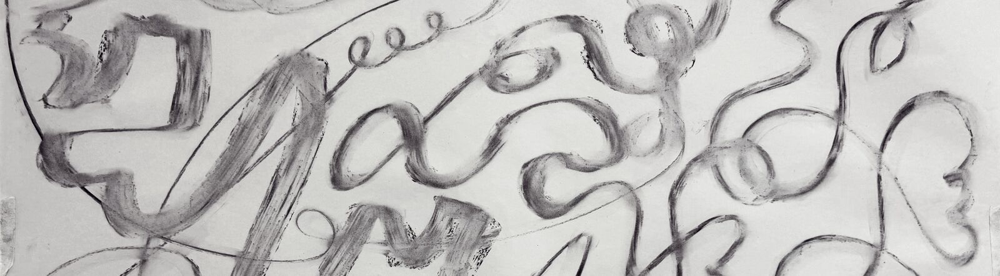

Drawing Week
Unit 1, Week 1

Research
Process
SPACE INVADER – line and drawing taken beyond traditional boundaries
Drawing in Space
Life Drawing
Drawing as Process
Rules for Making a Drawing
// For each drawing, use only two rules.
// The same two rules can be used for drawing different objects.
// One object can be drawn several times using different combinations of rules.
// The Rules:
- Use only broken lines of 1cm.
- Use only continuous line.
- Use only horizontal and vertical lines.
- You can only depict a detail or part of the object.
- Object must connect with two edges of the paper.
- Object must occupy 80% or four-fifths of the paper.
- Drawing must include two objects.
- Use only diagonal lines slanting in either direction.
- Silhouette or outline the object.
- Use only dots or spots of any size.
Reflection + Evaluation
- I was made to recall something I read in Betty Edwards’s book Drawing on the Right Side of the Brain: “You do not need to go in search of an individual style—you already have one. It is built into your brain, your nervous system, and your unique personality. It reveals itself in your marks on the paper…” This became especially apparent in the more “unconscious” drawing exercises (closing the eyes, letting the mind go). Your hand has already learned an enormous vocabulary of movements quite instinctively—from writing, cooking, sport, and ordinary physical life. Every mark you make carries some trace of that accumulated physical memory.
- I’m currently taking a traditional drawing atelier course on Saturdays alongside Foundation at City & Guilds, and I like the back-and-forth between the two: formalism and strict control on one side, freedom and experimentation on the other. Like the tension and release one puts into building muscle. In the first atelier lesson, we spent 10–15 minutes simply drawing straight lines correctly: arm extended, movement originating from the shoulder, eye looking ahead of the charcoal. The contrast between the first respective lessons in the two programs struck me as both poetic and slightly funny. I think moving gracefully between these two modes could be extremely useful to me as an artist: honing control, then deliberately abdicating control, then returning to it again. Neither seems particularly interesting without the other.
- The final exercise—“drawing” in three-dimensional space—was a particular brain-tickler. I found the act of demarcating planes in space strangely compelling, probably because of my mathematical background. A finite volume of space can contain infinitely many possible planes or divisions. By placing just a few lines or surfaces within it, you temporarily select and make visible one structure out of infinitely many possible ones. There is something poetic in that: drawing as an act of imposing a finite order on continuous space.